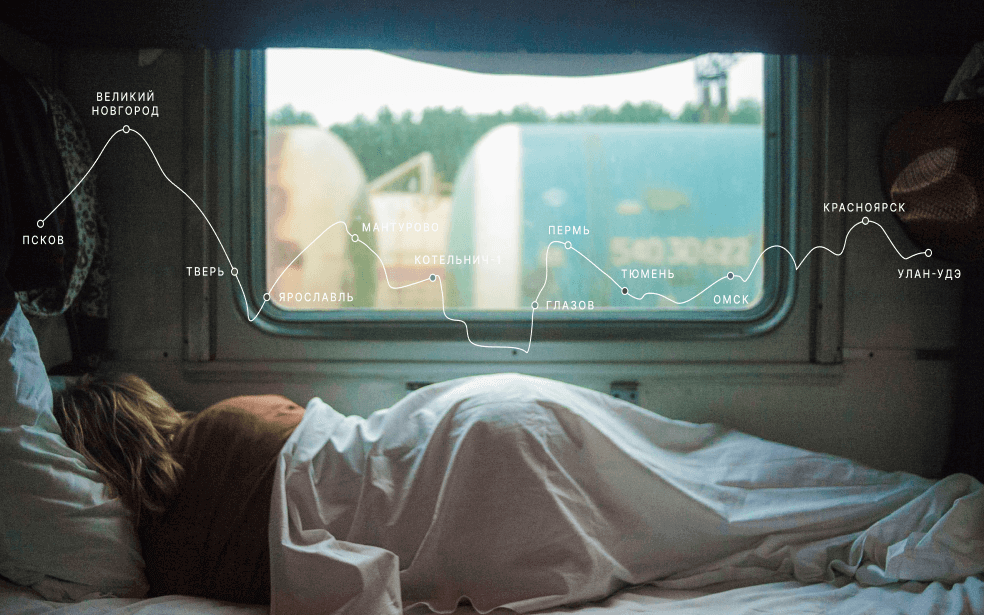

The real country is not in the newspaper but here.

russian train - your place is here
What we didn't see?
According to wciom polls, 95% of Russians dream of going somewhere,
but only 36% plan to spend their holidays in their native country.
Like, what have we not seen here at home? In fact, Russia is a whole
universe with the gentle sea of the south, the dense forests of the
Sayans and the harsh ice of the Putorana Plateau. And you can see all
these beauties without millions in your account, a passport and many
hours of flights. Like, for example, Vera Bashmakova, a brave young
mother who took three children in her arms, put them in her Zhiguli
and drove 20 thousand kilometers through her native country. We have
selected and described several interesting places worthy of your
vacation.
Here, surrounded by forests and sand dunes, you will see the two
sea horizons of the Pacific Curonian Lagoon on one side and the
wave of the Baltic Sea on the other. A rare natural area on the
edge of the Russian enclave
The Kaliningrad region does not end there. For the traveler and
Researcher In the neighborhood - the westernmost point of Russia,
the Baltic Spit - and the German heritage of the scattering of
small seaside cities.The atmosphere of the local places excludes
the hustle and bustle, dipting into the tranquility of nature and
the smell of steel, cool sea.
Almost the entire peninsula is beyond the Arctic Circle. The Sami
tundra, from which to the south is the taiga, and to the north -
the Arctic Ocean, pretending to be the Barents Sea.
Perhaps you watched Zvyagintsev and even heard the history of the
Arctic festival in Teriberka. Perhaps the word "Khibiny" did not
remain under the snow of school memories of geography lessons. You
may not have been interested in an ultra-deep well piercing the
Earth's crust, and apathy has long covered you from apatites. But
your dream of seeing the Northern Lights begins to come true with
a ticket to Murmansk.
Altai is one of the most beautiful places in Russia. First of all
from behind the mountains: if you go along the ridge, you will see
slopes strewn pines, mountain rivers and lakes. And if you open it
in the car windows, you can get acquainted with the invisible
miracle of the places here - mountain air.
The climate in Altai is temperate, so it's best to go here in the
summer. This way you will see all the diversity of local flora and
fauna. Elks roam the forests of Altai, eagles fly over the ridges,
and roe deer graze on the plains. And the famous manuls are also
inhabitants of the Altai Territory.
Everyone knows Baykal as the largest lake in the world. Many also
know that this is the largest source of fresh water and one of the
most beautiful places in Russia.
Of course, it's all like that. But Baykal is still an ideal place
for skoyoring competitions. This is a sport when a skier ties
himself to a motorcycle, and the tandem tries to develop as much
speed as possible on the ice. In March 2019, a world record of
197.011 km/h was set at the Baikal Mile festival.
Siberia ends not in the Urals, but in Karelia: Siberian larch
forming the taiga does not grow west of Vodlozer. But here it
waves 30 meters - the forests of Karelian national parks have
never known an axe because of impassable swamps. Some pines are
more than half a thousand years old. Touch a living creature that
saw the sun before Ivan the Terrible saw it. You can't find a
trail in a virgin forest for a hundred kilometers. And on rare
paths, trees a couple of meters from the ground are marked with
bear claws. So that everyone knows who the boss is here.